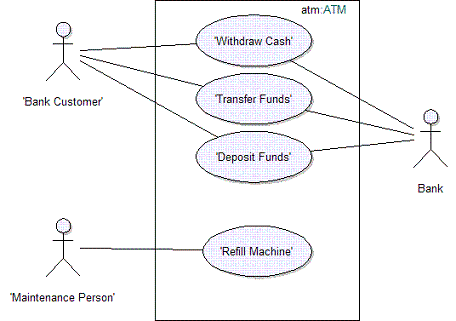

| Concept: Use Case |
 |
|
| Related Elements |
|---|
ExplanationA use case describes the interactions between one of more Actors and the system in order to provide an observable result of value for the initiating actor. The functionality of a system is defined by different use cases, each of which represents a specific goal (to obtain the observable result of value) for a particular actor. In an automated teller machine shown in Figure 1, the Bank Customer can withdraw cash from an account, transfer funds between accounts, or deposit funds to an account. These correspond to specific goals that the actor has in using the system.
 Each use case is associated with a goal of one of the actors. The collection of use cases constitutes all the possible ways of using the system. You should be able to determine the goal of a use case simply by observing its name. A use case describes the interactions between the actor(s) and the system in the form of a dialog between the actor(s) and the system, structured as follows:
Each dialog of this form is called a “Flow of Events”. Because there are many flows of events possible for achieving the goal (for example, the flow may differ depending upon specific input from the actor), and there are situations in which the goal cannot be achieved (for example, a required network connection is currently unavailable), each use case will contain several flows, including one “Basic Flow of Events” and several “Alternative Flows”. The Basic Flow of Events specifies the interactions between the actor(s) and the system for the ideal case, where everything goes as planned, and the actor’s goal (the observable result of value) is met. The basic flow represents the main capability provided by the system for this use case. As the name implies, Alternative Flows specify alternative interactions associated with the same goal. Closely related to use cases is the concept of a scenario. A scenario is a specific flow of events, for a specific set of inputs to the system, states of the system, and states of the system’s environment. Scenarios are closely related to test cases. Properties of Use CasesName
Each use case should have a name that clearly describes the main goal of the use case. The name may have to be several
words long to be understood. Typically the name is a verb phrase, for example: Withdraw Cash. Brief DescriptionThe brief description of the use case should reflect its purpose. Flow of Events -- ContentsThe flow of events should describe the interactions between the actor(s) and the system clearly enough for an outsider to easily understand. The flow of events should represent what the system does, not how the system is design to perform the required behavior. Follow these guidelines for the contents of the flow of events:
If you have used certain terms in other use cases, be sure to use the exact same terms in this use case, and that the meaning of the terms is consistent. To manage common terms, put them in a Glossary. Flow of Events -- StructureThe two main parts of the flow of events are basic flow of events and alternative flows of events. The basic flow of events should cover what "normally" happens when the use case is performed. The alternative flows of events cover behavior of optional or exceptional character in relation to the normal behavior, and also variations of the normal behavior. You can think of the alternative flows of events as detours from the basic flow of events, some of which will return to the basic flow of events and some of which will end the execution of the use case. The straight arrow in Figure 2 represents the basic flow of events, and the curves represent alternative paths in relation to the normal. Some alternative paths return to the basic flow of events, whereas others end the use case.
To clarify where an alternative flow of events fits in the structure, you need to describe the following for each detour to the basic flow of events:
It might be tempting, if the alternative flow of events is very simple, to just describe it in the basic flow of events section (using some informal "if-then-else" construct). This should be avoided. Too many alternatives will make the normal behavior difficult to see. Also, including alternative paths in the basic flow of events section will make the text more pseudo-code like and harder to read. Both the basic and alternative flows may be further structured into subflows. In doing this, your main goal should be readability of the text. A guideline is that a subflow should be a segment of behavior within the use case that has a clear purpose, and is "atomic" in the sense that you do either all or none of the actions described. Special RequirementsIn the Special Requirements of a use case, you describe all the requirements on the use case that are not covered by the flow of events. These are typically non-functional requirements that will influence the design model. See also the discussion on non-functional requirements in Concept: Requirements. Preconditions and Post-conditionsA precondition is the state of the system and its surroundings that is required before the use case can be started. Post-Conditions are the states the system can be in after the use case has ended. It can be helpful to use the concepts of precondition and post-condition to clarify how the flow of events starts and ends. However, only use them if the audience for the description of the use case agrees that it is helpful. Figure 3 shows an example.
Level of detail necessary in use casesThere will often be use cases in your model that are so simple that they do not need a detailed structured description of the use case (that is, a step-by-step outline is quite enough). The criteria for making this decision is that you don't see disagreement among different readers on what the use case means, and that designers and testers are comfortable with the level of detail provided by the step-by-step format. Examples are use cases that describe simple data entry or retrieval in your system. For more information on possible formats and the level of detail captured for each use case see Guideline: Use Case Formats. Example Use CaseFor an example of a completed use-case specification see Example: Use-Case Specification. |


| Concepts | |
|---|---|
| Examples | |
| Guidelines |
This program and the accompanying materials are made available under the |